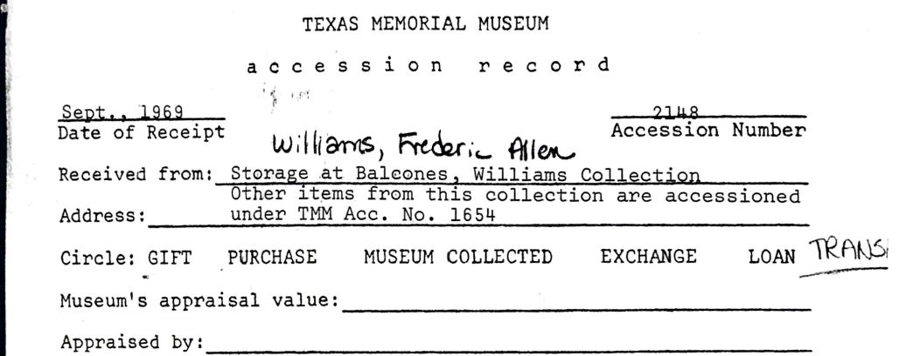
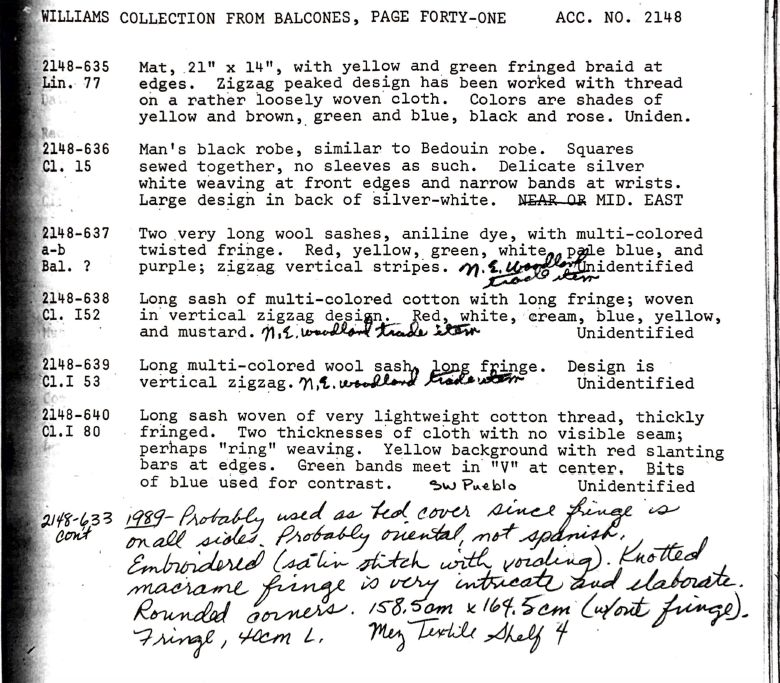

Description
Accession record limited to the pages that discuss Navajo textiles. View Complete accession record here: Accession Record of the Williams Collection

Full PDF: Part 1 of Williams Collection Paper Records
PERMISSIONS
All images and text are used with the permission of the Department of Art and Art History.